震不垮的土地
像這樣子打地舖睡覺已經是稀鬆平常的事情，可是在台灣倒是第一次這樣睡，晚上九點躺平，翻來覆去輾轉難眠。
一直到凌晨一點多才勉強有了睡意，眼睛才剛閉上沒多久，寺廟外頭就來了三個喝酒聊天的中年人。
講話聊天的聲音超級大聲，根本沒辦法睡的著，也擔心會不會被他們發現。
身體瑟縮本來就已經很不寬敞的神壇下方，一分一秒的數著時間等天亮。
喝酒聊天的人五點半離開，天色正好濛濛亮，天色黑的很快，但是卻蠻早就天亮了。
硬梆梆的地面感染了全身，每一個關節都像瞬間老化了三十歲，完全施展不開，收拾完睡袋換上騎車的衣服，十分鐘後就可以出發了。
同時，寺廟的管理人員騎著小綿羊來打掃，正好擦身而過，不然被發現睡在廟裡頭，可能會驚嚇到對方。
這是昨天過夜的寺廟門口，數了一下，昨天睡著的時間不到三個小時，疲憊感有增無減，才一出發就很想睡覺。
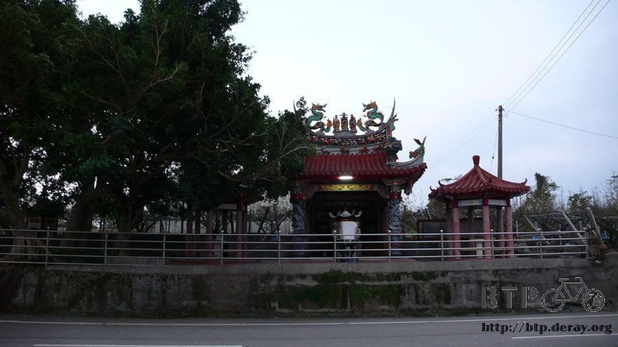
鄉下地方的房子大多都是兩層樓式的建築物，最棒的特色是一樓外牆上幾乎每一家都會有水龍頭。
在國外要找水龍頭可是要睜大眼睛努力查看，在台灣就容易很多，洗過臉之後開始騎車。
這次忘了帶鏡子，如果可以照鏡子的話，一定會發現自己面如死灰。
本來騎在台三線上，繼續往前騎就會經過台中市區，那邊太熱鬧了，怕被堵到，所以改走台八線，躲到南投的山裡。
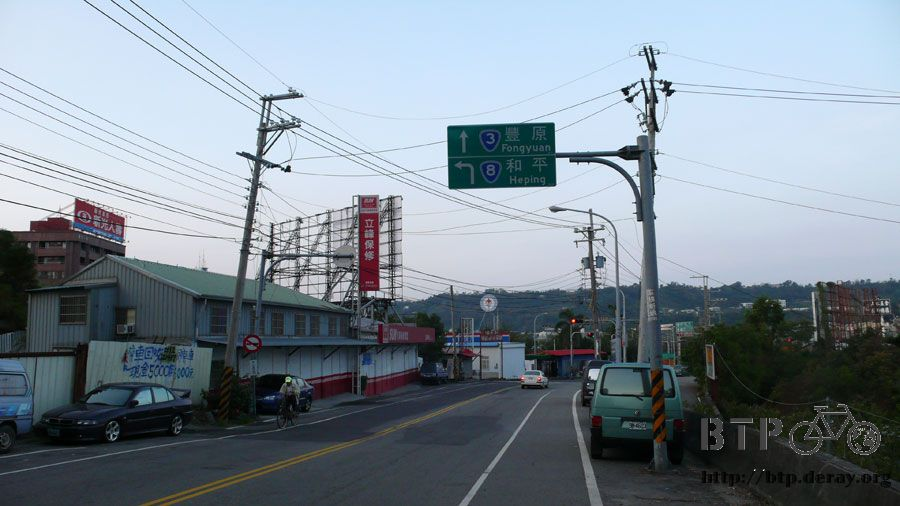
話說台灣的地名和馬路名稱的重複性都很高，『和平』這個地方好像到處都有。
左轉之後很快的就進入了台八線的起點，講台八線可能大家有點陌生，但是這條路有一個你一定聽過的稱呼。
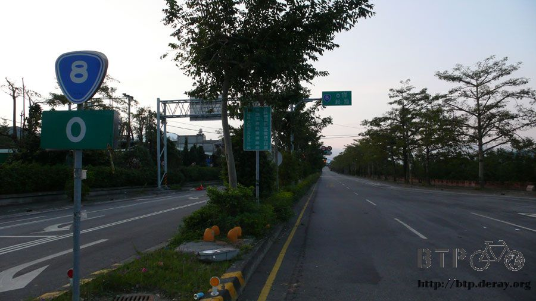
舉世聞名的『中部橫貫公路』簡稱中橫，橫跨中央山脈，有如鬼斧神工般的闢出一條路，主線全長190公里。
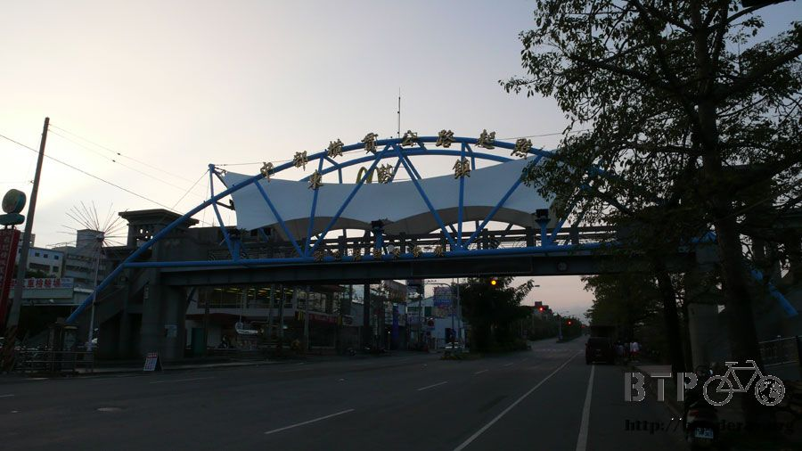
西元1956年7月開始動工，在當時修建的時候並沒有先進的機械支援，靠的是斧頭和炸藥來闢路。
因為炸藥控制不當而受傷的工人也有不少。後來又發生過多起死亡意外，經統計因工程意外及天災而殉難的有212人，受傷者702人。
921地震時震毀了部分路段，當時總計花了20億新台幣重建道路，之後七二水災又再度衝創中橫。
為了生態平衡等議題考量，決定暫時不修復中橫公路，2004年至今，中橫青山到德基的八公里路段，依然是無法通車的。
既然不能走完全程的中橫，那意思意思騎個一小段也好，在起點的牌樓下方買個飯糰、豆漿當早餐。
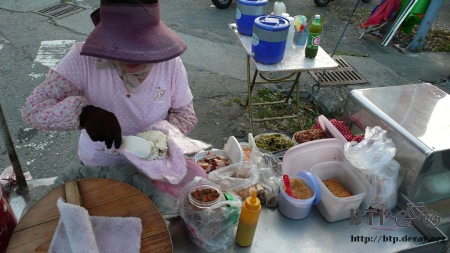
飯糰是現做的，台灣並不大，但是物價差異還是很大，在被台北和新竹的高物價折磨了好幾年之後，南部的物價水準便宜的令人微笑。
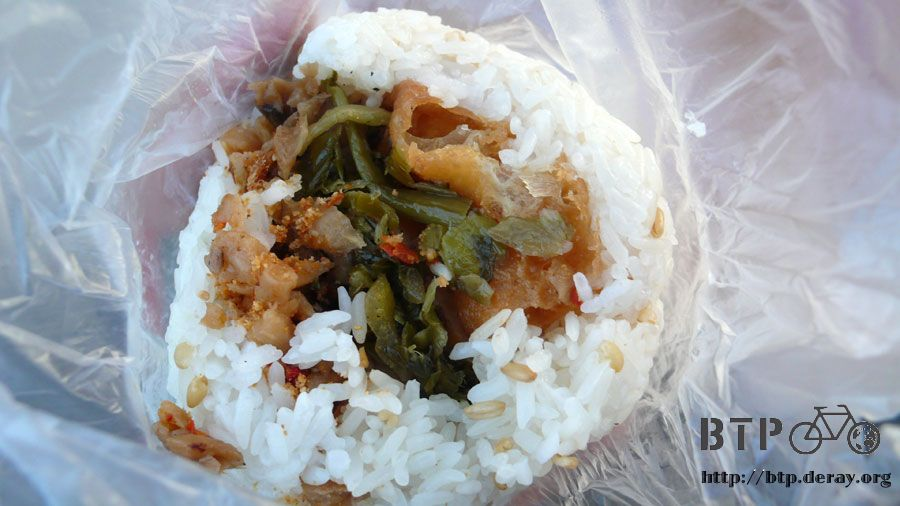
包了這麼多餡料的飯糰一顆只要25元，豆漿也是一杯10元，經濟實惠又好吃。
包包裡的餅乾就當成緊急乾糧，將來肚子餓又沒東西吃的時候再來啃。
拎著飯糰，邊騎邊吃，中橫由此展開，十月中旬的天氣依然炎熱，今天最高溫居然有38度。
在台灣騎車有點辛苦，天氣太濕熱，很容易就全身汗流浹背，在國外都不會這樣冒大汗。
全濕的衣服緊貼著皮膚，連帶的讓外套也跟著濕，不停流汗的結果就是隨時都在感覺口渴，永遠都保持缺水狀態。
路旁種的花，顏色好漂亮，跟週遭的綠意相比，整顆樹全都是粉紅色的花瓣，挺有日本氣息。
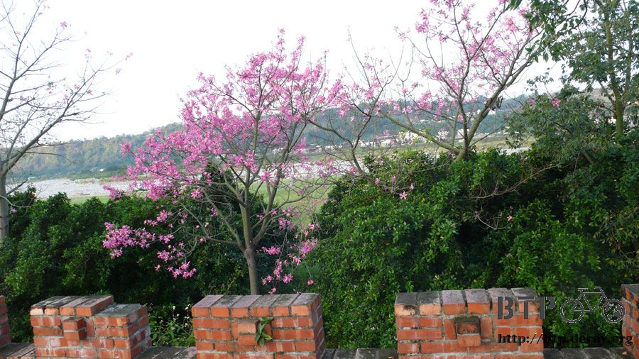
馬路旁邊就是開闊的河道，一早霧色迷濛，遠方的山只剩下剪影般的輪廓。
天空則晴朗無雲，等會太陽越爬越高，已經可以預期到今天一定會很熱而且很曬，同時也代表可以測試太陽能充電板，不會白白曬太陽。
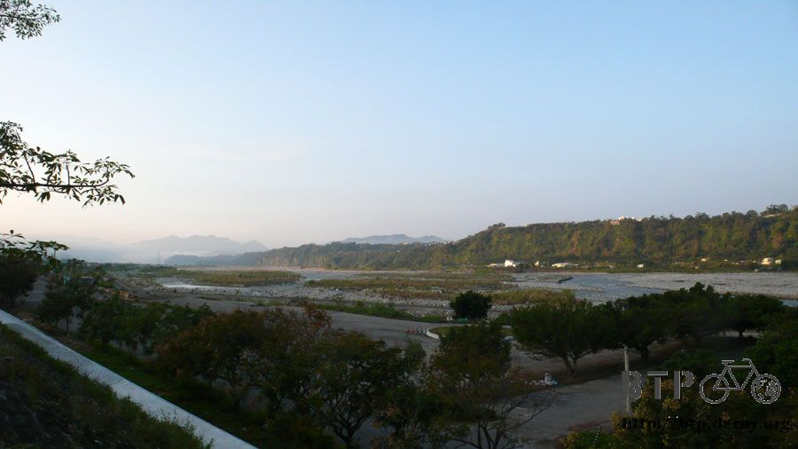
這邊種田的農家很少，幾乎都是種水果，鳳梨、木瓜、芒果、葡萄、文旦，種類相當多樣。
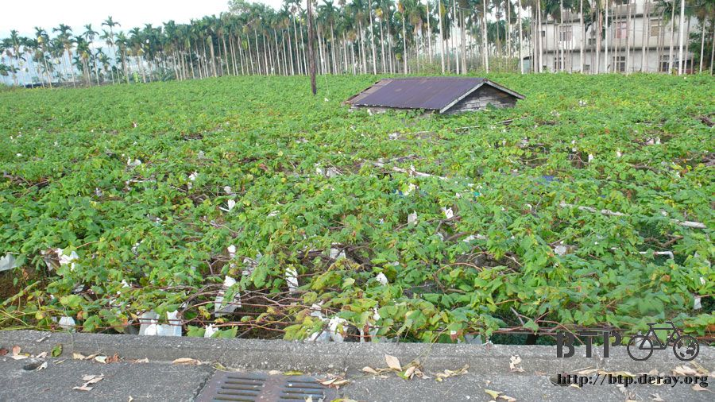
這一個和柏油路面貼齊高度、長在腳邊的果園種的是葡萄，本來應該爬在棚架上高高生長的葡萄居然長在腳底下，
不是路面蓋的比較高，就是農地整個很下陷。
遠方那座山居然有一條白色的腰帶，整個雲層也太低了一點吧？
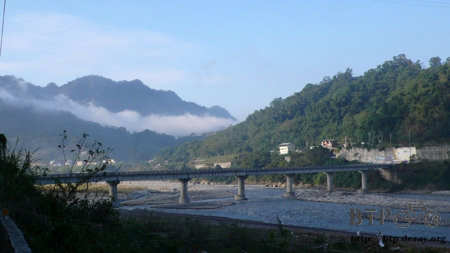
台八線騎了一小段，接下來就要右轉過照片中的橋樑，改走台二十一線，接下來會騎經過很多南投縣的鄉鎮。
補足上次環島沒有經過南投的缺憾，第一個要經過的鄉鎮，就是只要颱風一來就會從電視上聽到的南投鄉鎮，『國姓鄉』。

國姓鄉的聯外道路很容易就因為颱風的豪雨夾帶土石流而被沖刷斷裂，雖然對這個地方完全不熟，也沒有想過自己會有來國姓的一天。
但老是看電視報導，國姓對我來說，就像一個很熟悉的地方，同時又遙遠的不像在同一塊土地上。
只能說我在台灣的生活範圍實在太狹小，正常過日子的時候就像鐘擺一樣，擺盪於公司和家裡這兩個地方。
現在能夠悠悠哉哉的騎車到處亂跑，實在是一件很幸福的事情。
這邊是台二十一線的起點，今天會經過很多條路線的起點跟終點，本來想一個一個紀錄下來，可是搞到後來就亂掉了，還好沒迷路在山裡。
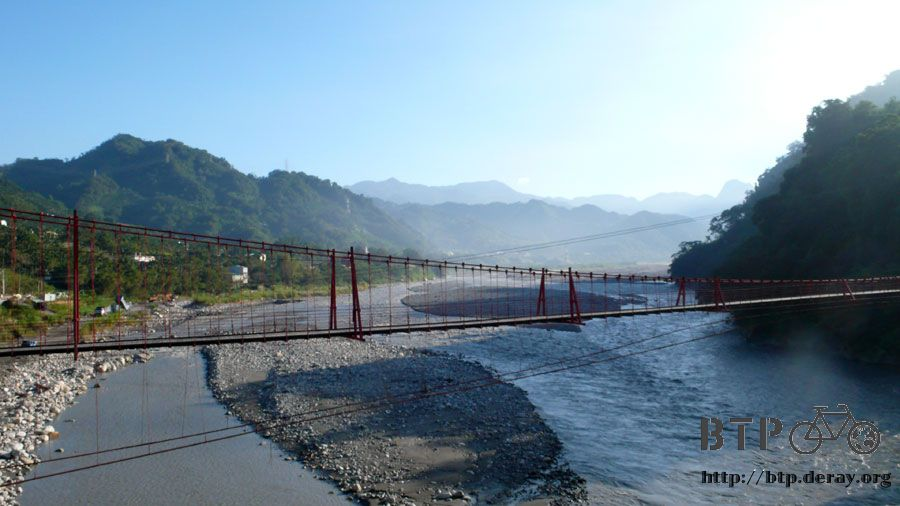
通往國姓鄉的橋樑，底下那條河流好像是大甲溪，溪水很混濁，夾帶著大量灰顏色的泥沙，上游不知道怎麼了？
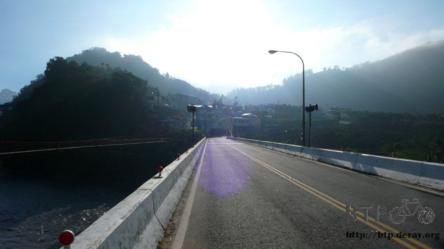
一般環島的路線，正常來說比較會爬山的大概就是北宜、蘇花、南迴這三條，幾乎都在台灣東部。
但如果環島路線稍微變化一下，西部也可以讓你騎山路騎到腿軟，尤其是不怕死，騎到南投山區來的人。
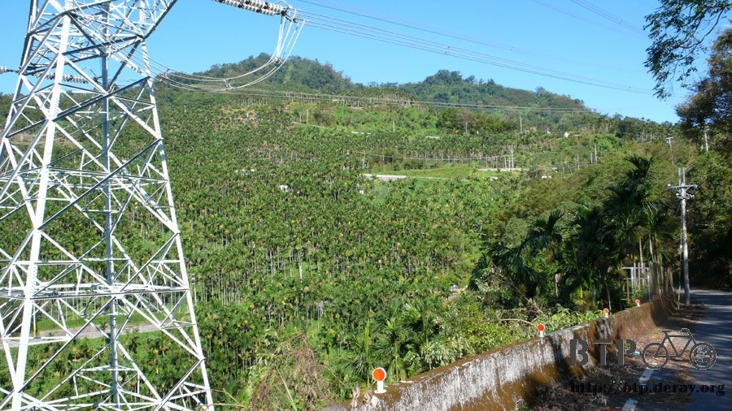
一整個山路就是蜿蜒直上，雖然最高點大概都是八～九百公尺，但還是不輕鬆，加上大太陽直射的威力，體力瞬間透支。
山勢依舊美麗，可惜樹林被大規模砍伐，改種經濟作物，像是香蕉、檳榔等等，一整個山頭都是檳榔樹的景色有點令人傻眼。
騎著騎著就抵達了國姓鄉，應該沒多少人來過這邊吧？
台灣的建築物少了一點獨有的特色，幾乎都是水泥房子，所以不論騎到哪個鄉鎮，差異度都很低。
只是『郊區』跟『有住人』的地方這樣的差別罷了。
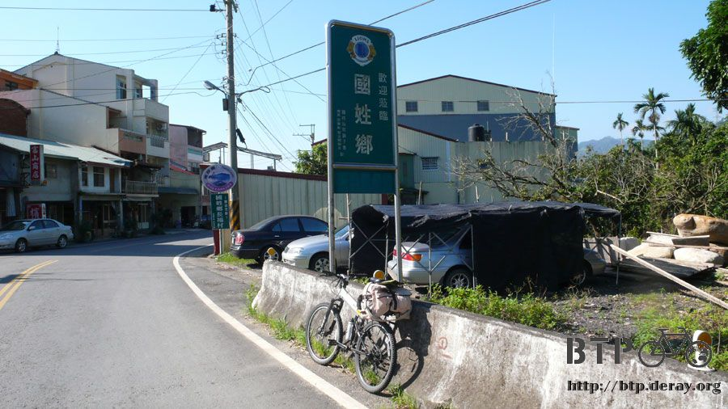
這一路上車流量越來越少，到最後幾乎一個小時才有一部車開過去，騎自行車的人已經快看不見了，一票年輕人騎著機車玩耍變成路上的大宗。
從國姓鄉看河床的道路，遠方那個蓋在河上的小橋，大概就是電視上拍個不停的橋樑。
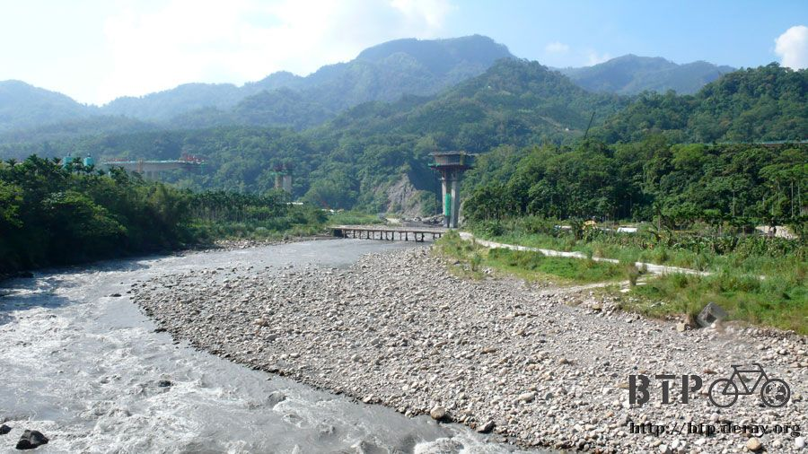
每次只要颱風一來，它就會被沖斷，記者就會很心酸站在河邊冒著風雨播報一條橋樑斷掉的新聞。
等颱風走了之後，橋樑再度重建，然後等著下一次颱風來摧毀它，從我的印象中，沒有一次夏天颱風季節它是沒斷掉的。
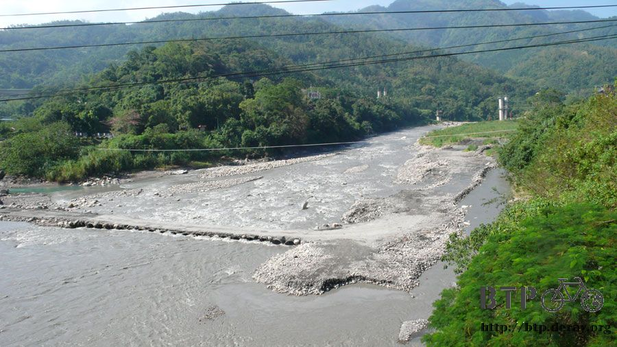
大概終於有人發現這樣子搞不是長久之計，不能每次橋樑一斷，就是遊客受困山中，然後要空投救援物資到山區來。
所以目前正在興建一條新的連外道路，還在施工中的高架橋，看起來比較沒那麼脆弱，期待它通車的一天。
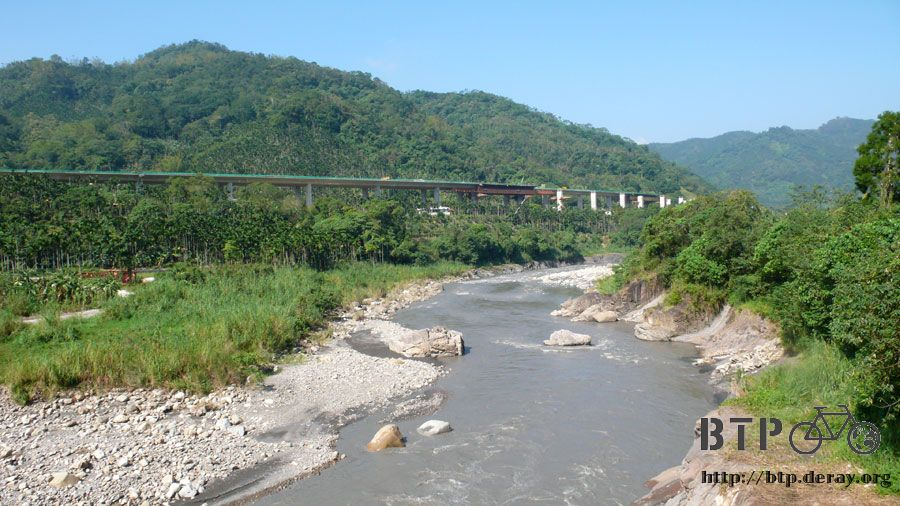
可是這樣依然不是治本的方法，做好山區的水土保持才是重點，不然一直活在土石流的陰影中，生活不是很有壓力嗎？
也許賺錢糊口飯的經濟壓力已經大於一切？
南投是921地震的震央中心，整個路段都可以看到『土石流 危險』的警告標語，路標上的觀光地點也很有921的味道。
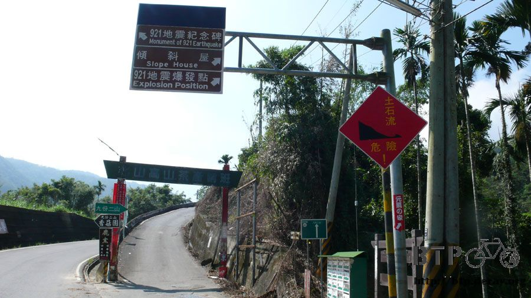
本來想去看順道會經過的921紀念碑，可是眼睛很瞎，怎麼也找不到～
口渴到受不了的時候就去雜貨店報到，好令人懷念的雜貨店，台北市已經幾乎看不到了，全都被便利商店給取代掉。
在這裡買點冰涼的飲料止渴，如果飲料不用錢的話，我應該可以無止無盡的喝下去。
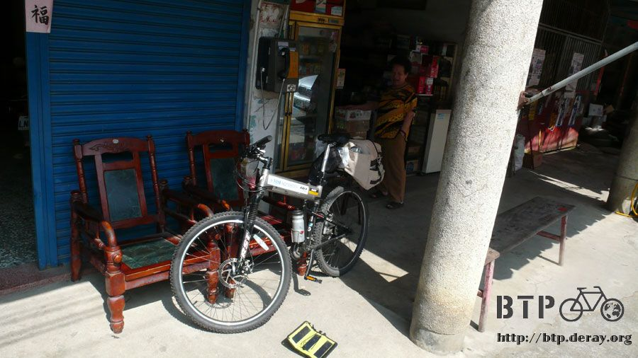
看地上的陽光就知道太陽有多大，這一路上都拿著太陽能板在充電，結果才短短一個多小時電力就已經充飽了。
太陽能充電板後面有一個充電式的電池，可以直接用USB孔輸出電力，只要能夠用USB充電的產品就可以直接來來使用。
身上符合這個條件的有GPS跟iPod，如果不能用USB充電的，那也可以用旁邊的電源輸出孔再配上轉接線材，主要是充手機的電。
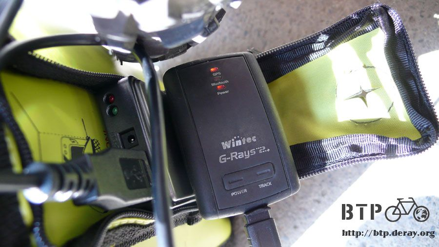
使用方法很簡單，太陽出來的時候就把太陽能板拿出來，不需要考慮角度的問題，這一款的特色就是隨便放也可以充電。
一樣是曬太陽騎車，只要想到自己正邊曬太陽邊充電，就會有一種賺到的感覺，免費的電力供給用起來也很爽，不用擔心GPS會沒電而中斷軌跡。
國姓鄉這一帶有很多的養鹿場，鹿也是經濟作物囉，雖然比較少看到有人在吃鹿肉。
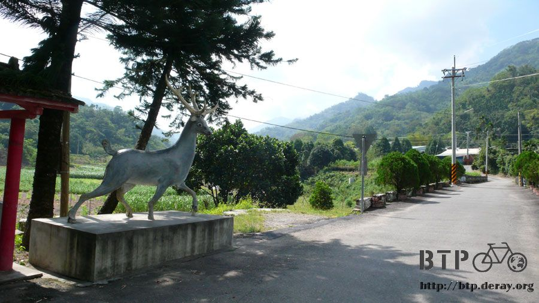
颱風剛走沒多久，山區的道路有很多落石和倒塌的樹木，一時半刻大概很難清理完畢，像這個竹子居然是橫著長...
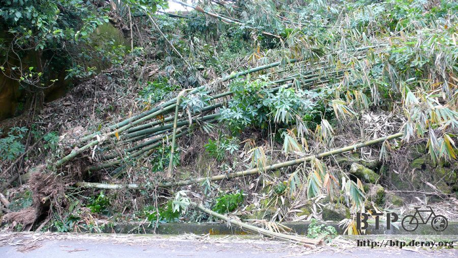
一路都是爬坡實在很折騰人，氣溫跟山路一樣不斷爬升，這一路上斷斷續續都有停車休息，讓屁股舒緩一下疼痛。
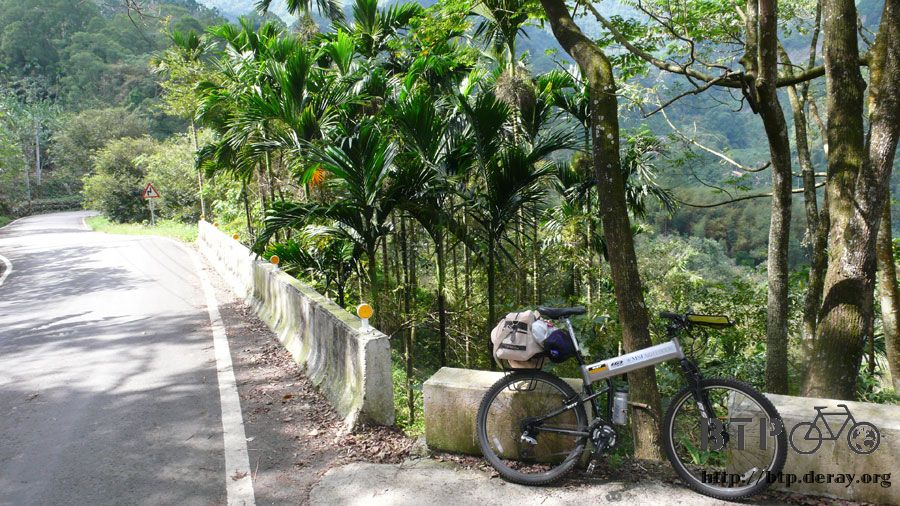
但依然還是騎到腳抽筋，右腳的小腿，整個繃住僵直，走路都要跳著走，在國外騎了將近五個月的單車，從來沒有抽筋過，還是台灣的山路猛。
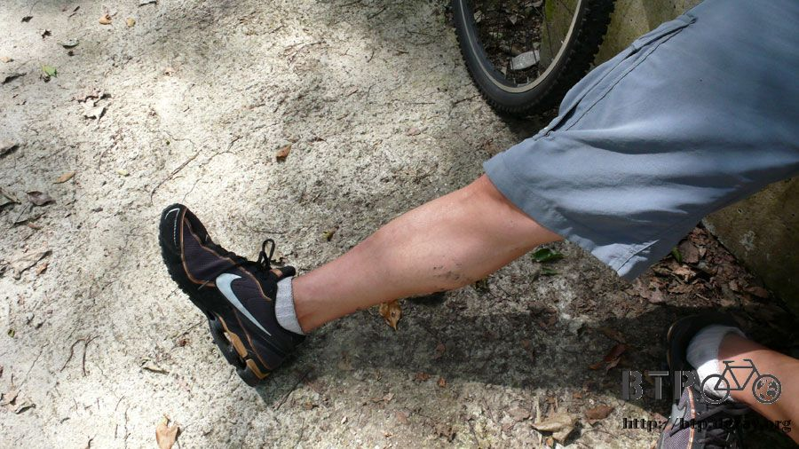
痛斃了的右腳，不知道怎麼治療抽筋，就坐著休息，讓它自然紓解。
抽筋的原因有很多，像是在長時間的反覆劇烈運動下，反覆運動時使用的肌肉超負荷的折磨，再加上過度出汗，導致肌肉的鹽量缺陷。
同時我太小看太陽的威力，一直以為現在已經是十月份了，太陽就算再大，也是十月的太陽，有什麼好怕的呢？
結果有帶防曬油卻懶得塗，很快了脖子後方、臉頰、兩隻腳都曬紅，到了晚上則進一步變成曬傷，刺痛的感覺讓我又是一夜難眠。
一路不停的轉騎省道，陌生的地名和路名，左右轉錯邊就會到深山裡頭，貿然下決定之前還是問一下路人比較保險。
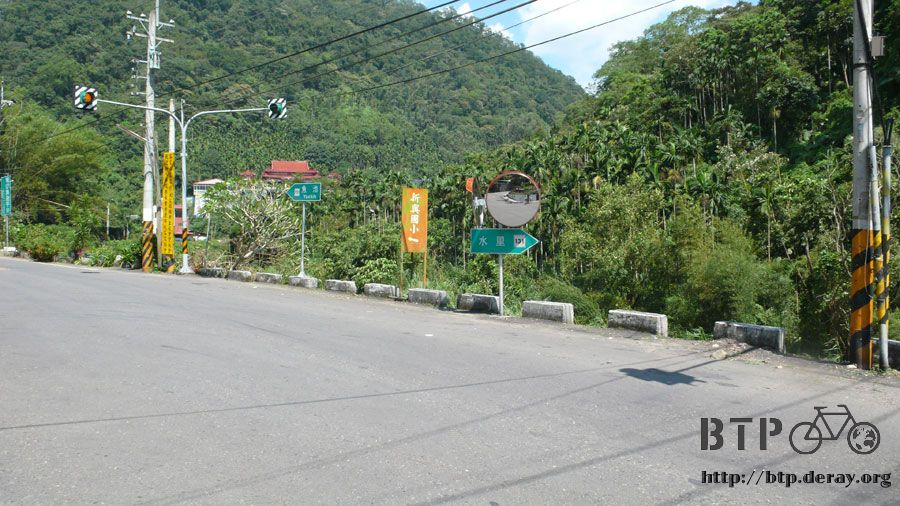
這個看起來就是水庫，因為它有水壩，但是水量超級少的，颱風剛過理論上應該會有很多雨水才對，怎麼會像是要乾掉一樣呢？
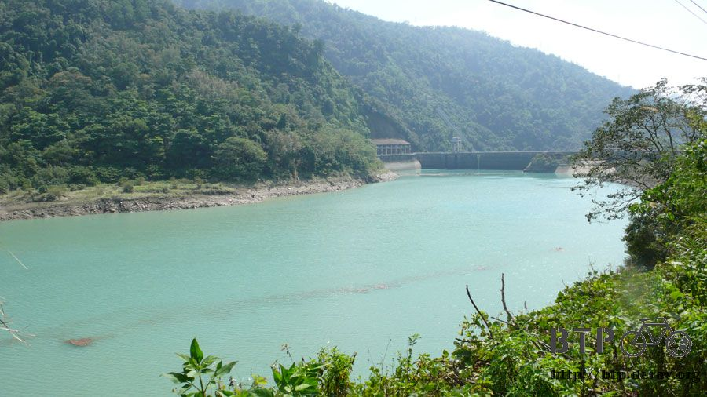
換一個角度看，泥沙淤積的也很嚴重，水量實在少的可憐，外頭的掛牌說這邊是水力發電場，所以水量少是正常的？
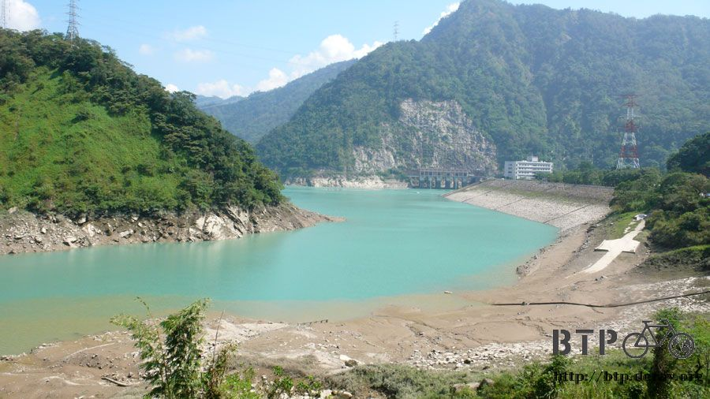
看著滿山遍野的檳榔樹，還有地下的土石流席捲而過的畫面，大家真的都很勇敢。
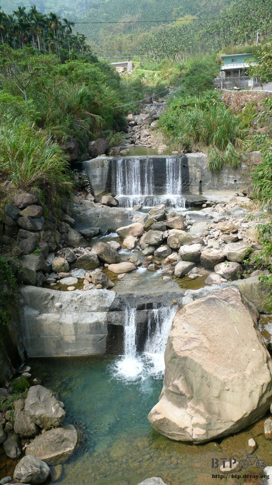
右下方那顆大石頭到底是從哪邊滾來的，整個也太大顆了吧。
半路經過的水里，這邊就比較有整體的規劃開發，要吸引遊客不動點腦筋是不行的。
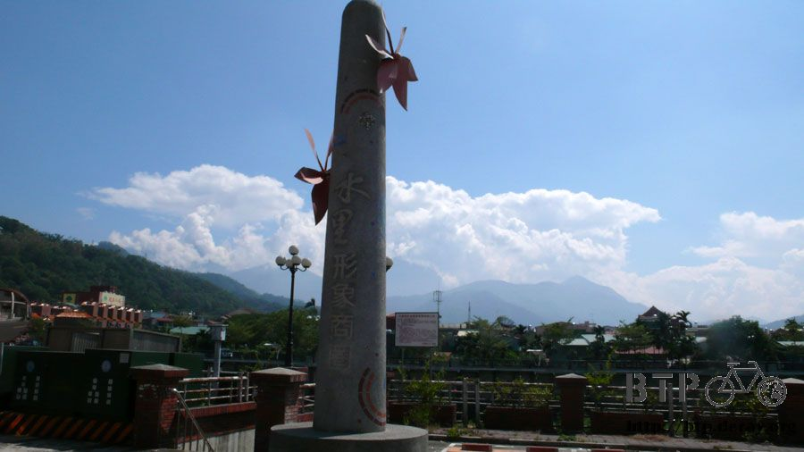
這一路上還經過集集、竹山等等很多的南投鄉鎮，可惜沒能好好的拜訪這些地方，有機會再搭火車來仔細遊覽。
幾乎每個鄉鎮都有自己的農會，或是農產品運銷中心，蓋的也各有千秋，不是很普通，就是很漂亮。
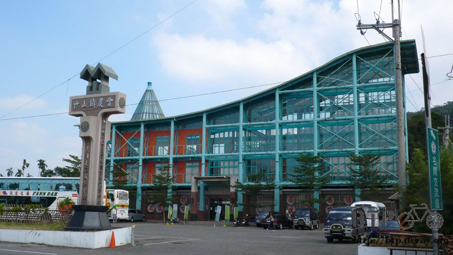
竹山鎮農會也挺有設計感的，天空藍支架構建出整體的外型，再配上玻璃圍牆，整棟農會採光非常好。
說到竹山最有名就是地瓜，這一路經過的鄉鎮，每個地方都有自己的特色，有些我要想很久才想的起來是什麼。
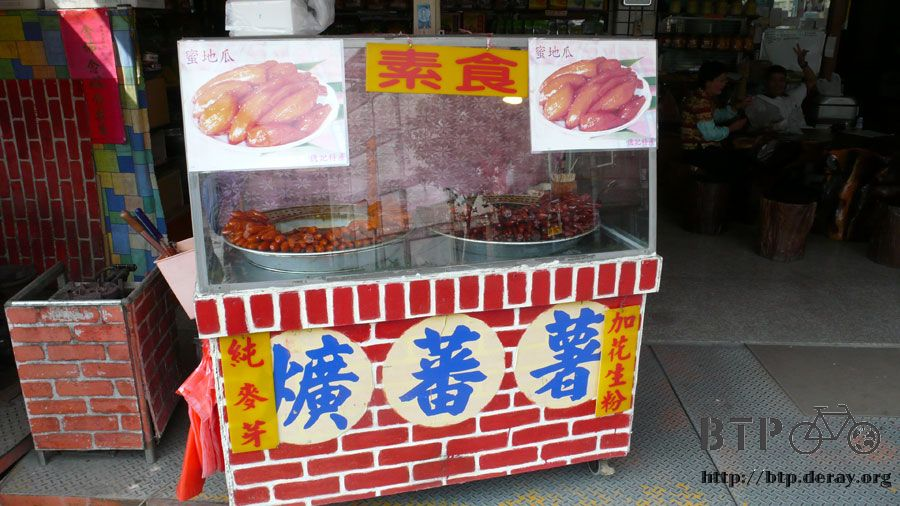
如果特色是可以吃的東西，那大家就會一窩蜂的擺在路邊販售，所以一眼就能知道。
垂直的騎完了南投縣，好快又要離開美麗的山區回到喧囂的都市，台一線這條有點悶的道路再度出現。
距離嘉義只剩下二十公里，稍微悶一下還不打緊。
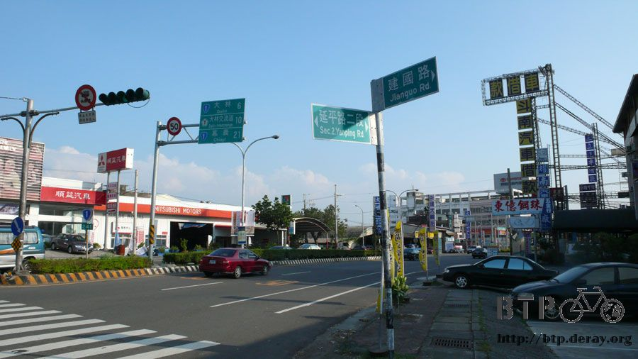
回到平地之後，路旁的農作物又變成熟悉的稻米，結滿稻穗黃澄澄的顏色，看了那麼多國外的小麥田，還是台灣的稻米田比較親切。
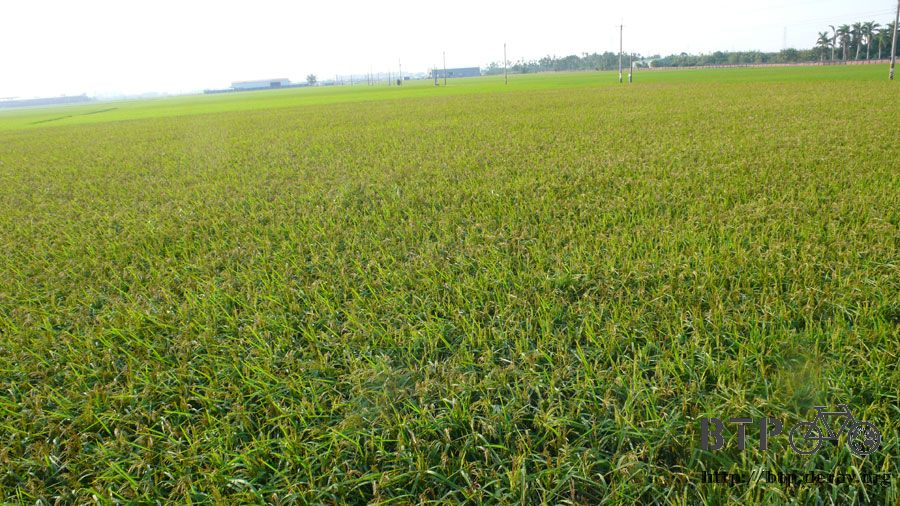
沿著台一線騎車，整個腦袋可以關閉不要緊，騎車的時候我有很多時間可以想點將來的計畫。
目前已經有了初步的構想計畫，等騎回台北就可以著手進行，自己創業的感覺一定很棒，就算失敗也可以學到很多經驗。
一點很有趣的想法一直冒出來，想著接下來就可以一步一步去建構自己的夢想，不由得興奮起來！
經過嘉義之前一定會先經過民雄，民雄有中正大學、鬼屋跟肉包，通通都只是經過而已，沒進去消費。
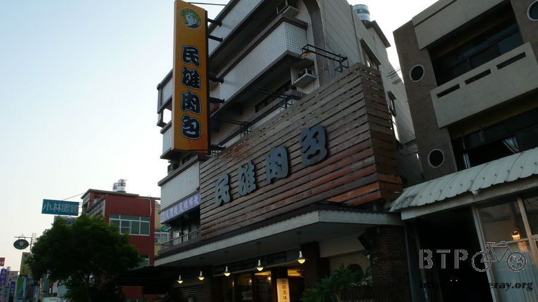
外觀好像有重新裝潢過，看起來跟之前不太一樣，味道以若干年前我吃過的民雄肉包來評論，則是普通的驚人。
在民雄市區找了一間網咖，台灣中南部比較好找網咖，費用也是很便宜，這一間算貴的，一小時也才20元，當然用越久就越便宜。
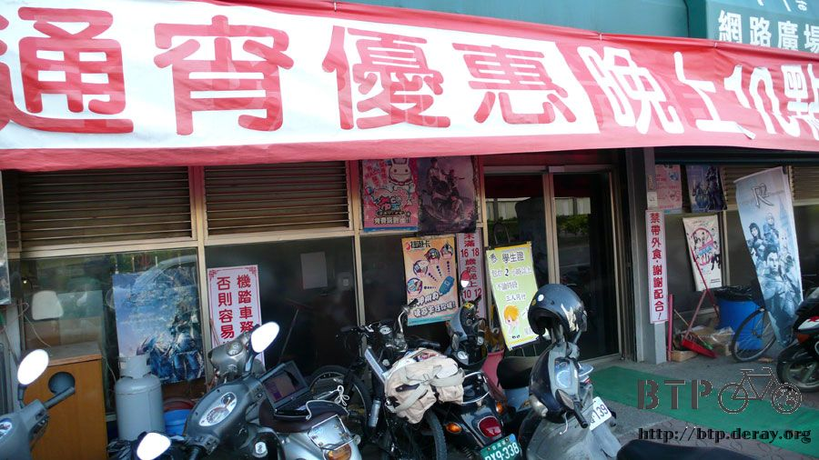
單車沒有帶鎖，放在外頭有點令人不放心，很快的上傳完遊記就準備閃人，天色則剛好黑。
還好今天不到六點就開始騎車，所以還騎了蠻遠的距離，不然現在還在山裡面。
繼續往前騎台一線的話就會快速的穿越市區進入台南然後高雄，這樣稍嫌悶了一點，所以在這邊轉另外一條路走。
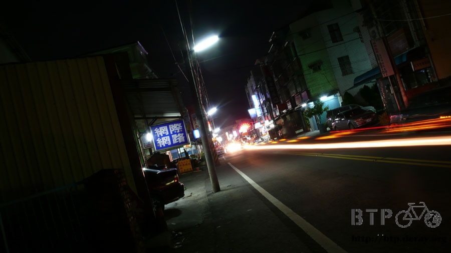
黑黑的夜裡騎車比較危險，少了會自己發電的頭燈照明，只能依賴路燈，入夜之後溫度會漸漸降低，但永遠都在二十度以上。
從頭橋往竹崎的方向騎，準備接回台三線，明天又是一整個爬山的行程，晚上一定要好好的睡上一覺。
但問題是，要睡哪呢？
跟昨天一樣睡在寺廟就沒什麼創意，今天過夜的地點是竹崎游泳池，早已經過了營業時間，鐵門都拉下來了。
入口的牌子上寫著早上從五點半開始，簡單估計大概五點就會有工作人員來上班，所以鬧鐘就調五點。
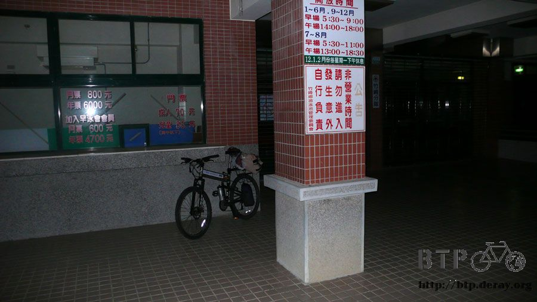
幸運的話，也許隔天早上還可以利用游泳池的設備沖個澡或是喝點水，不幸的話大概就是半夜會被趕走。
外面沒有水龍頭也沒有插座，反正蚊子多的不像話，我也不想在這樣的環境下熬夜寫遊記。
用水壺的水沾濕毛巾，擦拭身體的時候發現，小腿跟脖子只要一碰到毛巾就會又痛又癢，懶得塗防曬油的結果就是曬傷了。
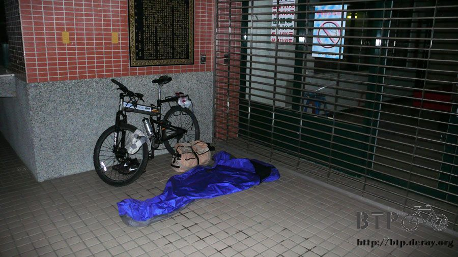
今天繼續睡在硬梆梆的地上，還有舖地磚，所以睡起來有很明顯一格一格的感覺，晚上大概八點躺平，很累可是又睡不著的感覺很難受。
大量流汗加上不能洗澡，渾身發癢又因為皮膚曬傷所以不能去抓，整個人翻來覆去到凌晨兩點多就是睡不著。
硬梆梆的地面怎麼躺都不舒服，平躺、側躺全身就是有肌肉會抗議被壓迫到，這時候就很想念睡墊，舖上睡墊之後就像睡在彈簧床一樣的舒適。
很怕明天會沒有精神騎車，越是想強迫自已睡覺越是睡不著，為什麼在台灣露營會特別難睡呢？
繼續閱讀：10.15 小路彎彎